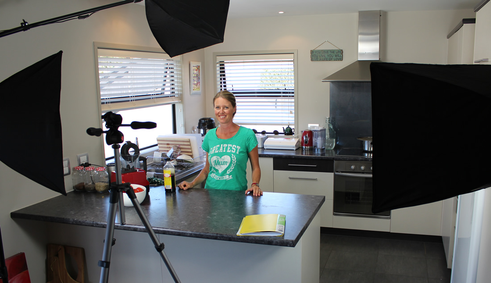

We just launched the first episode of:
"The Nutritarian Cooking Show"
The show is a new endeavor for our family (we are learning as we go and covering all aspects of creating the show from: recipes and hosting to filming and final production) so stay tuned and Subscribe to our YouTube channel for the latest updates and new episodes
Join Us for Live Demonstrations
If you are in the Tauranga, New Zealand area and would like to join us for live Nutritarian Cooking demonstrations please follow the link for our MeetUp group and request an invitation. Our MeetUps are free cooking demonstrations and social gathering for health minded folks.
What is a Nutritarian?
The term "Nutritarian" was first coined by Dr. Joel Fuhrman to describe an eating style that aims for eating with maximum nutrient density to achieve optimal health. The basic idea is to remove all disease causing low nutrient foods including: all animal products of any kind (beef, fish, chicken, turkey, anything with a face) and all dairy products (milk, butter, cheese, yogurt, ice cream, anything made from milk) as well as all processed foods, and food additive drugs like sugar, salt, and oil. Then start from the ground up and learn how to cook using nutrient dense organic whole foods including: all manner of vegetables, greens, beans, onions, mushrooms, fruits, berries, seeds, nuts, herbs and spices. This lays the groundwork for a complete health revolution that empowers your body to rebuild and repair itself for maximum health, natural weight loss, and boundless energy.
Sample Nutritarian Dishes
These are samples of some of the delicious Nutritarian dishes we make. Everything is made from whole organic foods with no added sugar, salt, oil, dairy, or any animal products of any kind.
Nutrient density to the max!
Nutritarian Pizza
Fruit Tarts
Links to Learn More
We have found Dr. Fuhrman's research to be the one of the clearest sources for nutritional excellence backed by scientific research and first hand experience. These are some links to get you on your way to learning more.
- Dr. Fuhrman's PBS Special: "The Immunity Solution : Part 1"
- Dr. Fuhrman's PBS Special: "The Immunity Solution : Part 2"
- Dr. Fuhrman's PBS Special: "End Dieting Forever"
- Dr. Fuhrman's PBS Special: "3 Steps to Incredible Health"
- Dr. Fuhrman's Cooking Show: "Nutrient Dense Foods: It's About Quality, Not Quantity"
- Dr. Fuhrman's TED Talk: "Why I Love Nutritional Science"
- Dr. Fuhrman Lecture: "The Greatest Diet on Earth"

About Jill
Hi there Foodie Folks!
Over the years I have learned to cook an array of health giving food goodness. After many years of using my family and friends as test subjects it became clear the healthiest and most profound food path for our family is the Nutritarian style of eating that has been clearly set out for everyone by Dr. Joel Fuhrman in his best selling books and materials.
I am happy to share my knowledge of Nutritarian cooking and think of my family's efforts for making our new show and offering our cooking demos as our service to humanity.
Contact
RawFare started as a home based raw food dessert business and has evolved into our new Nutritarian Cooking show, live demonstration classes, and private Nutritarian based consulting. If you would like to contact Jill for private consulting on how to cook Nutritarian dishes please call:
Jill: 027-879-7687